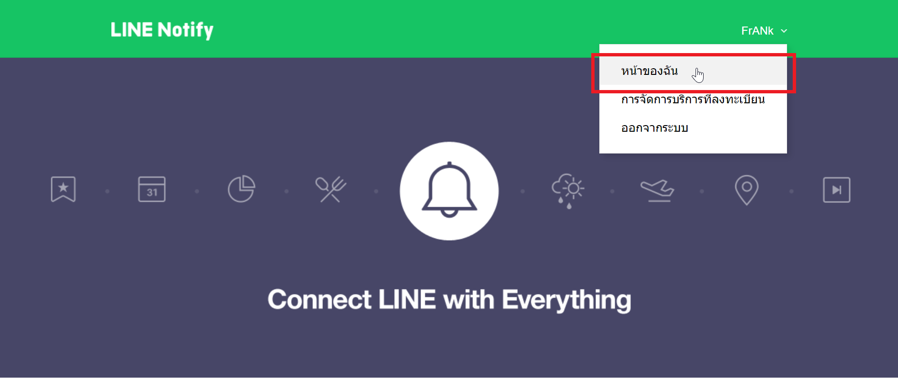
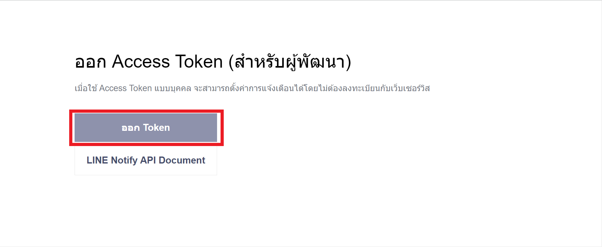
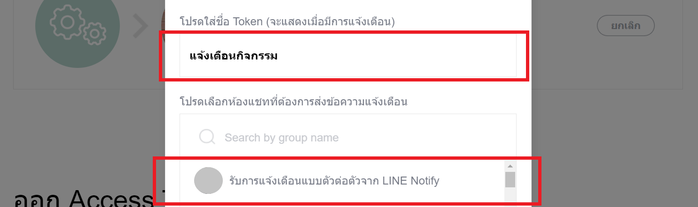
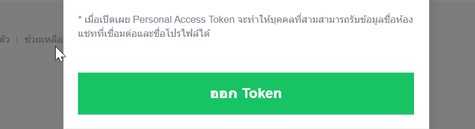
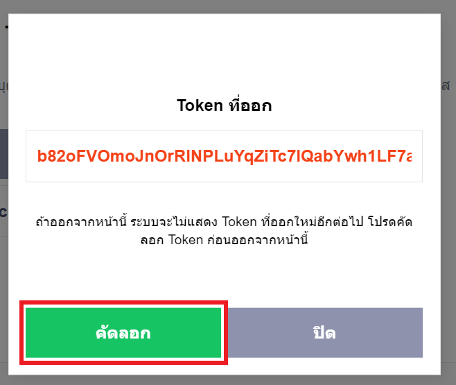

วิธีการสร้าง Line Token
- 1. เข้าไปที่ลิงค์ Line Notify
- 2. ทำการเข้าสู่ระบบ
- 3. ทำการเลือกที่ "หน้าของฉัน" ตามรูปภาพด้านล่าง

- 4. เลื่อนมาด้านล่าง และเลือกไปที่ "ออก Token" ตามรูปภาพด้านล่าง

- 5. ตั้งชื่อการแจ้งเตือน "ตรงโปรดใส่ชื่อ Token ตัวอย่าง แจ้งเตือนกิจกรรม"
แล้วเลือกกด "รับการแจ้งเตือนแบบตัวต่อตัว จาก Line Notify" ให้กลายเป็นตัวสีเขียว
และกดเลือกที่ "ออก Token" ตามรูปภาพด้านล่าง


- 6. กดเลือกที่ "คัดลอก" แล้วกลับมาว่าไว้ที่ช่อง "Line Token" ที่หน้าสมัครสมาชิกของ Assump Chana
